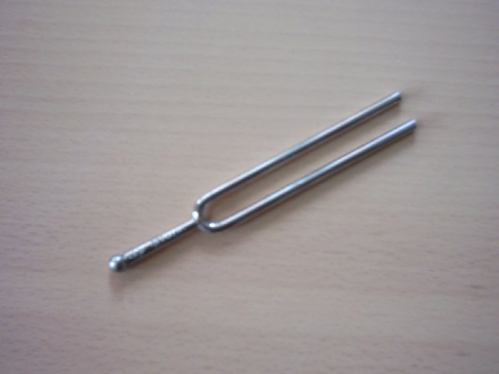

A440
Note 039
Home > Blog A Musician's Log > Note 039
A tuning note on the radio
On 29 September 1946, the BBC launched its Third Programme, the radio service that later became Radio 3. Before each day's broadcasts, listeners could hear a reference tone of 440 Hz, intended to help musicians tune their instruments.
The signal was generated electronically. According to Edward Pawley's BBC Engineering 1922–1972, the broadcaster used a crystal-controlled oscillator operating at one million cycles per second. Electronic circuits derived the required frequency from this stable reference.
This was a considerable departure from the traditional tuning fork or the orchestral oboe. A musical reference pitch could now be generated with great precision and transmitted to thousands of listeners.
But why 440 Hz? And why did musicians need an internationally agreed frequency in the first place?
Before there was a standard A
For much of European musical history, the frequency assigned to a particular note varied considerably between regions, institutions, and periods.
A musician travelling between cities could encounter organs, harpsichords, and wind instruments built for different pitch levels. Even within the same city, church and chamber ensembles might use different reference pitches.
These differences were not necessarily considered defects. Musicians developed ways of accommodating them, including transposition and the use of instruments suited to particular local practices.
Bruce Haynes, in A History of Performing Pitch (2002), documents the historical coexistence of several pitch levels. Terms such as Chorton, associated with church music, and Cammerton, associated with chamber music, described distinctions that varied according to region and period.
The surviving evidence includes instruments, organ pipes, historical descriptions, and tuning forks. In 1880, Alexander J. Ellis published The History of Musical Pitch, an extensive investigation of the subject based partly on measurements of historical instruments.
One difficulty was particularly important for instrument makers. A violin string could be retuned within practical limits, but the pitches produced by an organ or a wind instrument depended substantially on physical dimensions. An instrument constructed for one reference pitch might not perform satisfactorily alongside instruments built for another.
As orchestras expanded and musicians, instruments, and repertoires circulated more widely, these differences became increasingly troublesome.
The French diapason normal
During the nineteenth century, orchestral pitch tended to rise in several European musical centres.
The causes included changing instrumental construction, preferences for a more brilliant orchestral sound, and competition among performing institutions. Higher pitch could also create problems for singers, who were required to perform established vocal parts at increasingly elevated absolute frequencies.
In 1859, the French government established a reference pitch of A435, known as the diapason normal.
The standard was represented by a tuning fork calibrated at 15°C. That temperature specified a condition for the reference instrument; it did not mean that every musical performance had to take place at 15°C.
Musical instruments respond differently to temperature. In wind instruments, the speed of sound in the vibrating air column increases as the temperature rises, affecting the pitch produced. The frequency of a metal tuning fork changes much less under ordinary temperature variations.
France's A435 provided a definite reference for musical institutions and manufacturers. Other countries and organizations considered or adopted similar standards, although agreement was far from universal. Britain offers a revealing example.
From 435 to 439, and then 440
In 1896, the London Philharmonic Society adopted a reference of A439, associated with a temperature of 20°C.
The number emerged from an interpretation of the French standard that treated the effect of temperature on wind instruments as a reason to adjust the reference frequency. Later accounts questioned the assumptions behind that calculation.
By the 1930s, the problem had acquired another dimension: broadcasting. Radio networks could transmit orchestras performing in different countries, making variations in concert pitch increasingly apparent. Broadcasters also needed reliable reference signals for musicians working in their studios.
In May 1938, the British Standards Institution organized a meeting attended by organizations concerned with musical performance, manufacturing, and broadcasting. According to Pawley's historical account, the participants came close to agreeing on A439. However, engineers pointed out that 440 Hz would be easier to generate electronically than 439 Hz.
The following year, an international conference held at Broadcasting House in London adopted A440 as the reference frequency. The agreement specified an absolute frequency, independent of the temperature of the performing environment.
The British standard appeared in December 1939. The BBC subsequently incorporated A440 into its broadcasting operations. Its electronic reference tone, introduced with the Third Programme in 1946, was derived from a highly stable oscillator rather than the variable pitch of an instrumental performance.
The choice of 440 was therefore connected not only with musical practice but also with the practical requirements of measurement and electronic signal generation.
What ISO 16 actually specifies
In 1955, the International Organization for Standardization published Recommendation ISO/R 16, establishing A440 as the international reference for standard musical pitch.
This was subsequently incorporated into ISO 16:1975, Acoustics: Standard tuning frequency (Standard musical pitch). The 1975 document remains the current international standard, having been reviewed and confirmed in 2022.
Its technical content is remarkably brief. The standard specifies that the A in the treble staff has a frequency of 440 Hz. It also establishes requirements for tuning equipment, including an accuracy of ±0.5 Hz, and states that musical instruments should be capable of tuning to the reference frequency under the working conditions specified by their manufacturers.
The standard does not prescribe equal temperament or determine the exact frequencies of every note in a musical scale. Those depend on the tuning system being used. Nor does it require every musical performance to take place at A440. It establishes a common reference for situations in which standard pitch is needed.
What five hertz actually change
The difference between A435 and A440 is five cycles per second. Expressed as a musical interval, however, the change is approximately 19.8 cents, or about one-fifth of an equal-tempered semitone.
For a string instrument, changing the reference pitch requires an adjustment in string tension. For wind instruments, the possibilities depend on their construction, including the length and configuration of the vibrating air column. Certain instruments can be adjusted comparatively easily; others have narrower practical limits.
Standardization consequently affected instrument manufacture as well as performance. Makers needed to construct instruments capable of functioning together at an agreed pitch, rather than relying exclusively on the conventions of their local markets.
But A440 did not eliminate regional preferences. Many European orchestras now use reference pitches around A442 or A443, while A440 remains common elsewhere. Ensembles specializing in historical performance may use other reference pitches, including A415 for certain Baroque repertoires.
A415 is approximately one equal-tempered semitone below A440. Its use in modern historical performance should not be mistaken for evidence that all Baroque musicians used exactly that frequency.
These differences matter when instruments designed for particular pitch levels are brought together. A keyboard, organ, accordion, or historical woodwind instrument may not accommodate a change of reference pitch as readily as a violin.
The practical question is therefore not whether 440 Hz is the correct frequency for music. It is whether the instruments and musicians participating in a particular performance can agree on, and physically accommodate, the same reference pitch.
Readings
- Ellis, Alexander J. 1880. "The History of Musical Pitch." Nature 21: 550–554.
- Gribenski, Fanny. 2023. Tuning the World: The Rise of 440 Hertz in Music, Science, and Politics, 1859–1955. Chicago: University of Chicago Press.
- Halmrast, Tor. 2012. "Tune in to ISO 16! The Long and Oscillating History of Standard Tuning Frequency." ISO Focus+, November–December: 25–27.
- Haynes, Bruce. 2002. A History of Performing Pitch: The Story of "A". Lanham, MD: Scarecrow Press.
- International Organization for Standardization. 1975. ISO 16:1975: Acoustics: Standard Tuning Frequency (Standard Musical Pitch). Geneva: ISO.
- Pawley, Edward. 1972. BBC Engineering 1922–1972. London: BBC Publications, 124–126.